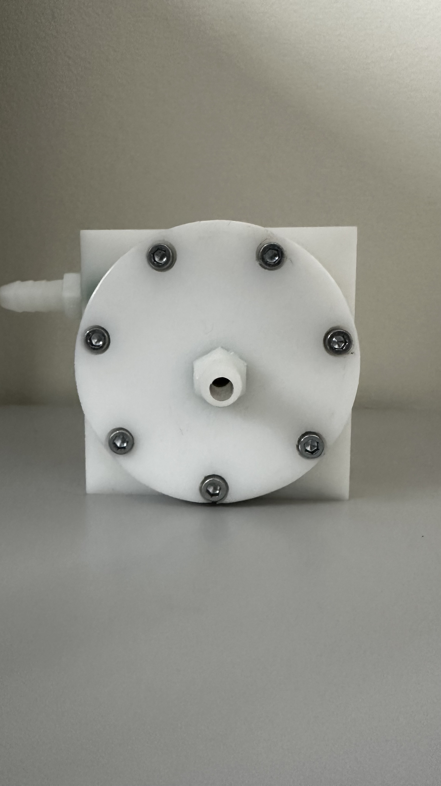
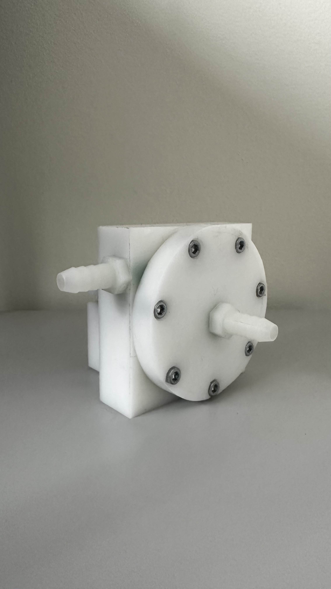
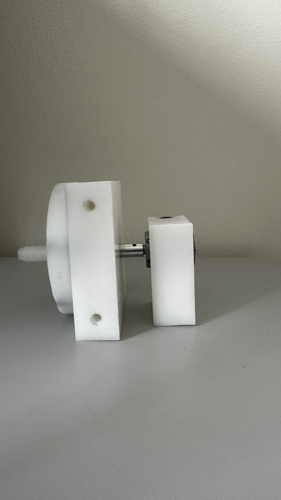
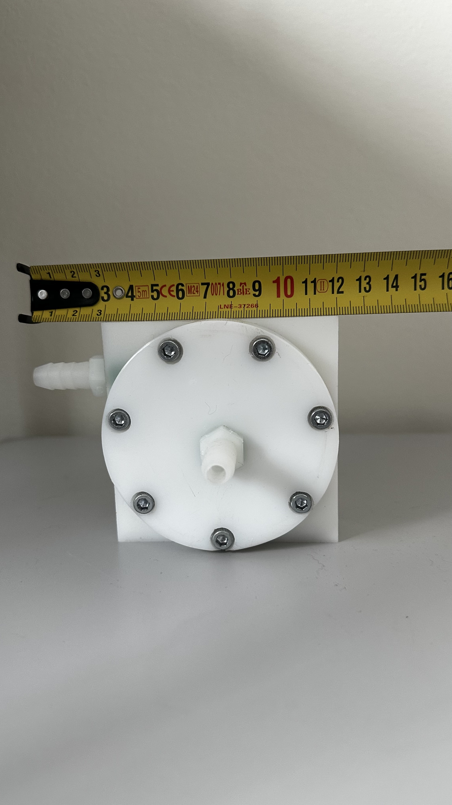
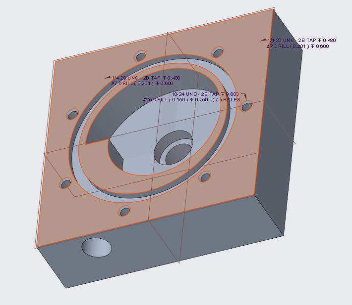
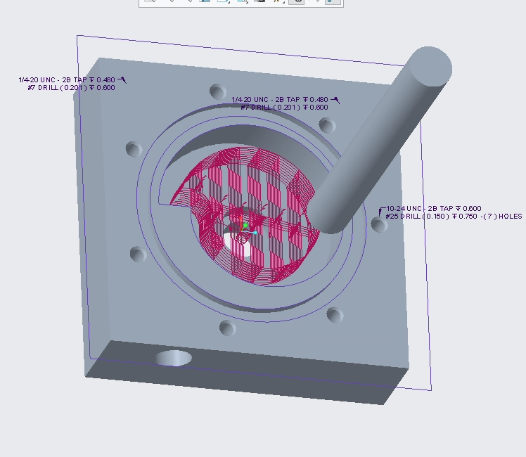
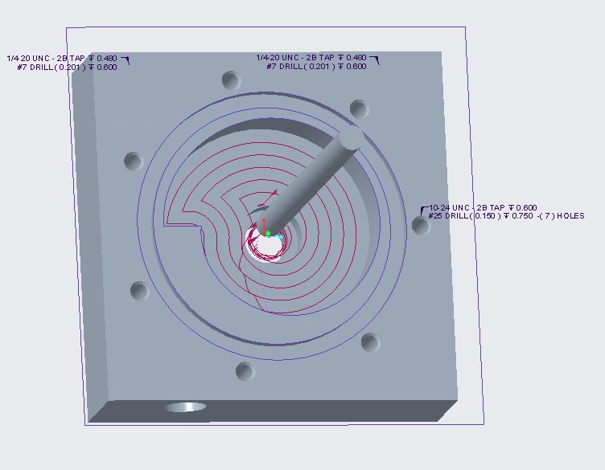

CNC Acrylic Centrifugal Pump
Manufacturing a working pump housing from stock acrylic

Final assembled acrylic pump housing manufactured from stock material.
This project demonstrates CNC manufacturing workflow from stock material to finished part. Using provided pump geometry, I developed the machining process, generated toolpaths and G code, and machined an acrylic pump housing with drilled and tapped features for final assembly.
Project Overview
This project focused on manufacturing a centrifugal pump housing from stock acrylic using CNC machining. The project required turning raw acrylic stock into a functional pump housing with internal volute geometry, drilled and tapped features, and geometry suitable for final assembly.
The emphasis was on manufacturing execution, process planning, and translating CAD geometry into a successful machined part. This case study details the CAM strategy, machining sequence, process planning, and successful fabrication required to produce the final component.
Role and Scope
The pump geometry was provided as part of the class project. I did not design the pump itself. My contribution was entirely focused on manufacturing planning and execution. I was responsible for translating the provided part geometry into toolpaths, planning the machining operations, and executing the physical fabrication to deliver a finished, functional component.
Final Pump Assembly

Three quarter view showing the completed housing and hose connection geometry.

Side view showing the housing depth and shaft side assembly.

Scale reference showing the approximate footprint of the final assembly.
CAD Geometry

CAD view of the volute geometry used as the basis for toolpath generation.
CNC Toolpath Generation
The core challenge of machining acrylic is managing heat and chip evacuation to prevent the material from melting or fracturing. The roughing operations focused on bulk material removal from the volute cavity, using aggressive but controlled stepovers. Finishing operations required careful consideration of tool engagement and surface speed to achieve a clean final surface on the internal pump geometry. Extensive simulation was performed prior to any physical cuts to validate the tool motion and prevent costly stock ruin.
Machining simulation used to verify cutter motion before CNC execution.

Roughing toolpath used to remove bulk acrylic material from the internal cavity.

Finishing toolpath used to refine the final volute geometry.
Tooling and Process Planning
The machining process used multiple cutter sizes to progressively remove material, refine the volute cavity, and finish smaller internal features.
| Tool ID | Tool Type | Diameter (in) |
|---|---|---|
| T0001 | End Mill | 0.500 |
| T0002 | End Mill | 0.125 |
| Quarter In | Milling | 0.250 |
| 38IN | Milling | 0.375 |
Larger tools were used for bulk material removal, while smaller tools were used to reach tighter geometry and finish internal features.
Manufacturing Workflow
Reviewed the provided CAD geometry and determined the best setup and orientation for machining the internal volute and mating surfaces.
Developed the machining strategy, mapped out roughing and finishing passes, and generated the necessary G code for the CNC mill.
Verified the toolpaths in simulation to catch potential collisions, prevent tool breakage, and ensure the machining strategy would yield the correct geometric features.
Machined the acrylic housing from stock material, managing feeds and speeds to ensure clean cuts and avoid melting or cracking the acrylic.
Performed necessary drilling and tapping operations to prepare the housing for final assembly with the motor and impeller.
Outcome
The project resulted in a successfully manufactured acrylic pump housing, complete with all necessary geometries, tapped holes, and mating surfaces. The final part was suitable for assembly as part of the class project and demonstrated capable execution of the manufacturing plan.
Reflection
This project reinforced the critical gap between modeling a part and actually building it. Success required thinking heavily through the sequence of operations, anticipating how the tool would interact with the acrylic material, and recognizing the importance of toolpath verification. I gained practical experience in translating complex internal geometry into a tangible, high tolerance component within a real shop environment.
Additional build details and visuals available on request.